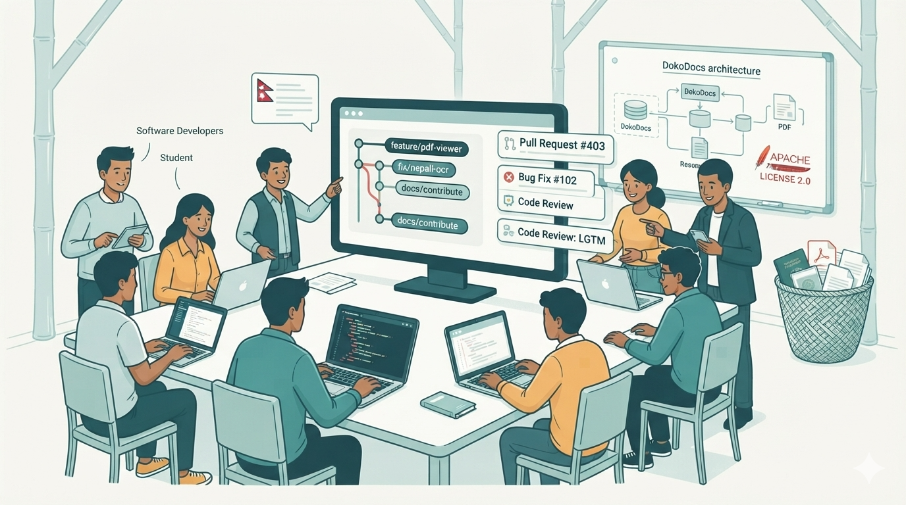

The Vision of DokoDocs: From a Privacy-First Scanner to an Open Document Platform
DokoDocs begins as a simple document scanner, but our long-term vision reaches well beyond scanning paper into PDFs.

Software that adapts to you
We believe individuals and organizations should have complete ownership over their documents, the infrastructure that stores them, and the workflows built around them. Too often, document management platforms require businesses to adapt to a vendor's ecosystem. Our goal is to reverse that relationship — by building software that adapts to the needs of its users.
The first version of DokoDocs focuses on the essentials: reliable scanning, PDF creation, offline use, and local-first storage. It is intentionally lightweight, so anyone can start scanning without creating an account or committing to a particular cloud service.
Next milestone: self-hosted synchronization
Instead of forcing users into a proprietary cloud, organizations will be able to deploy DokoDocs on their own infrastructure and connect mobile devices securely. Whether that infrastructure is a private server, a NAS, WebDAV, SFTP, Google Drive, or another supported provider — the choice remains with the user, not the application.
AI and OCR, done responsibly
Artificial intelligence and OCR will be introduced carefully, guided by the same principles as the rest of the project. We see particular value in high-quality English and Nepali OCR, searchable PDFs, and optional AI-assisted document organization.
Wherever possible, AI features should run on-device or on infrastructure you choose — never silently sending sensitive documents to third-party AI services.
A platform for organizations
Over time, DokoDocs will evolve into a platform for organizations that need greater control over their document workflows. Planned enterprise capabilities include centralized administration, secure team collaboration, role-based access control, and private deployments that meet internal security requirements. For businesses and institutions that want a fully branded experience, we also plan white-label editions — customized with their own identity while still benefiting from the underlying open-source platform.
Open source, always
Throughout this evolution, one principle stays unchanged: the core of DokoDocs will remain open source. Community contributions keep improving the foundation, while optional commercial offerings — enterprise support, managed deployments, white-label solutions — help sustain long-term development without compromising the openness of the project.
We don't want to build another document scanner. We want to build an open document platform that individuals, businesses, governments, and developers can trust, extend, and truly own.
That's the future we see for DokoDocs.